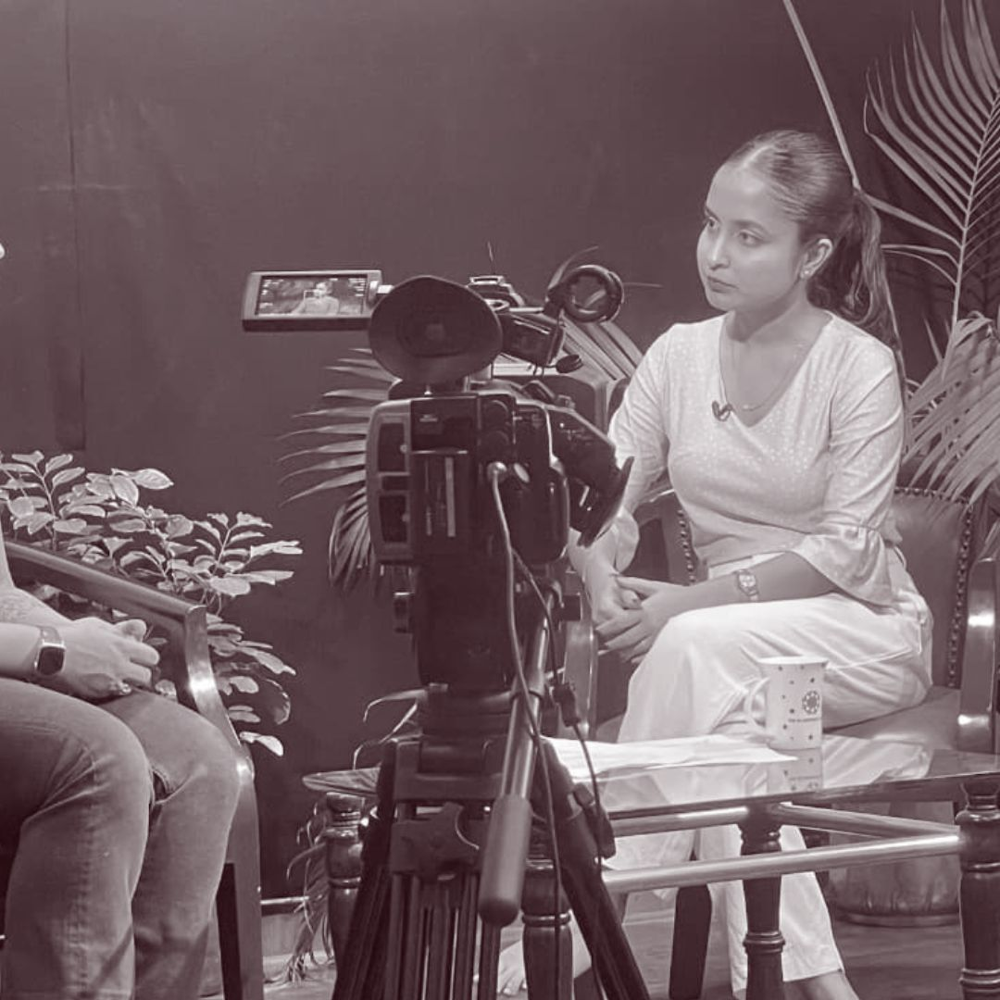
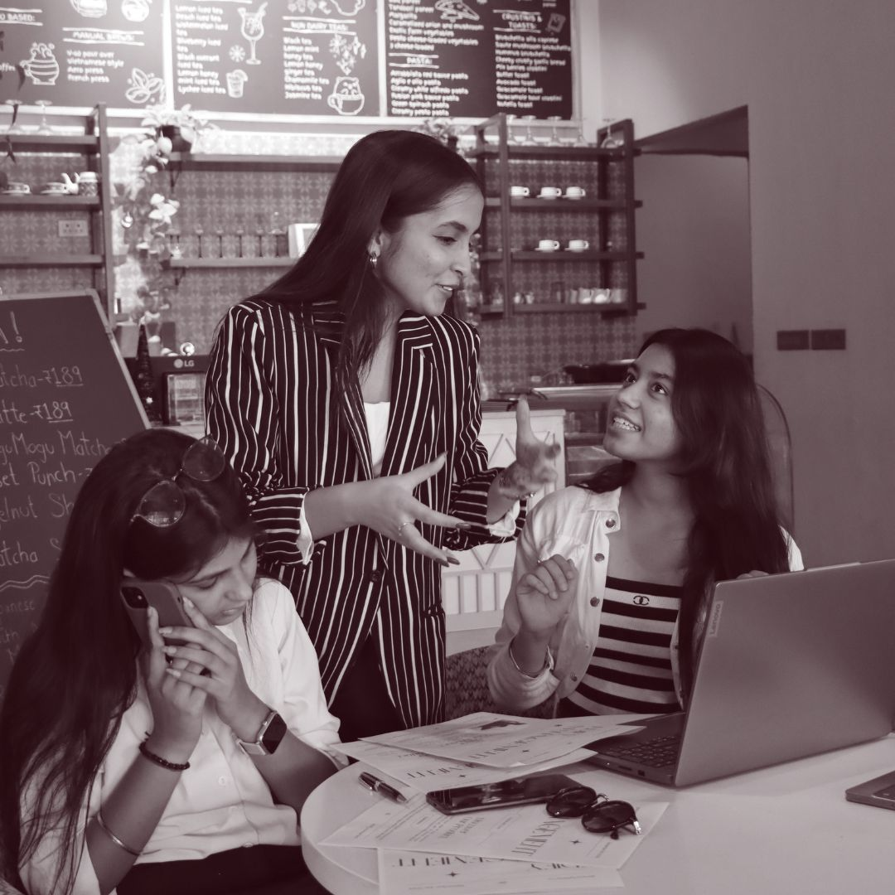

Archive · Add your own photos below



Team / Edify
Building in tech and finance by day.
Analyzing systems, people, and the future
of intelligent technology by night.
I operate at the intersection of systems thinking, product strategy, and relentless execution. As a founder, I've learned that the distance between vision and traction is almost always a people and operations problem.
From bootstrapping a marketing agency at 19 that crossed $108K in revenue without external capital, to co-founding BYB — an automated credit analyst platform for SMBs — I build things that solve structural problems others haven't noticed yet.
Based in India, operating globally. Currently thinking deeply about where intelligent systems meet human capital.
Today, SMBs generate more verifiable financial data than ever before — but access to credit hasn't changed. BYB is an automated credit analyst built to fix exactly that structural gap.
As co-founder and CEO, I operate across strategy, systems, and execution simultaneously — leading acquisition planning, ecosystem partnerships, product structuring, and investor-facing communication, while shaping how the platform scales long-term.
Visit BYB →Built Edify Management at 19 with a laptop, two friends, and the belief that marketing should do more than look good — it should solve, scale, and create measurable impact.
What started through university networks evolved into a strategy-led agency serving clients across India, the UK, and Canada, spanning 17+ industries from hospitality and FMCG to fashion and construction.
Edify was built on the thesis that SMBs were chronically underserved by marketing — not because solutions didn't exist, but because strategy was treated as a luxury. We built a productized, strategy-first model that changed that.
Small businesses lacked access to strategy-first marketing. Agencies either served enterprise clients or delivered execution-only work. The middle market was ignored.
A productized service model — strategy-led, systems-backed, metrics-driven. University networks seeded our first clients; results fueled referral growth across three markets.
Led acquisition, brand strategy, and operational structuring. Built a 10-member team. Designed systems for long-term scale — without external capital, without compromise.
75+ clients across India, UK, and Canada. 17+ industries. $108K in revenue. Zero external funding. Proof that execution and discipline outlast capital.


Team / EdifyStarted a strategy-led marketing agency at 19 with two friends and a laptop. First clients came through university networks. The thesis: marketing should solve, not just look good.
Edify grows to 75+ clients across 3 countries and 17+ industries. Team expands to 10. $108K in revenue — no external funding, no shortcuts, no excuses.
Sole organiser of a TEDx event. Initiated and hosted The IISU Podcast — 75K+ impressions across socials. Began delivering workshops on entrepreneurship and digital strategy at leading Indian universities.
Identified a structural gap: SMBs generate more verifiable financial data than ever, yet credit access hadn't evolved. BYB is built to change that.
Leading BYB as CEO — shaping product, partnerships, and platform strategy. Thinking about where intelligent systems transform access to capital for the businesses that drive real economies.
Sole organiser of a TEDx event — handling everything from curation to execution. Built a stage for ideas worth spreading. Because the best events change how people think, not just what they know.
Initiated and hosted The IISU Podcast. 75K+ impressions across socials. Conversations at the intersection of ambition, technology, and identity — for the builder who thinks differently.
Delivered workshops on entrepreneurship and digital strategy across leading Indian universities. Grew beyond titles. Created impact designed to outlast intent.
I'm always open to conversations about building, investing, collaboration, or ideas that don't fit neatly into a box.